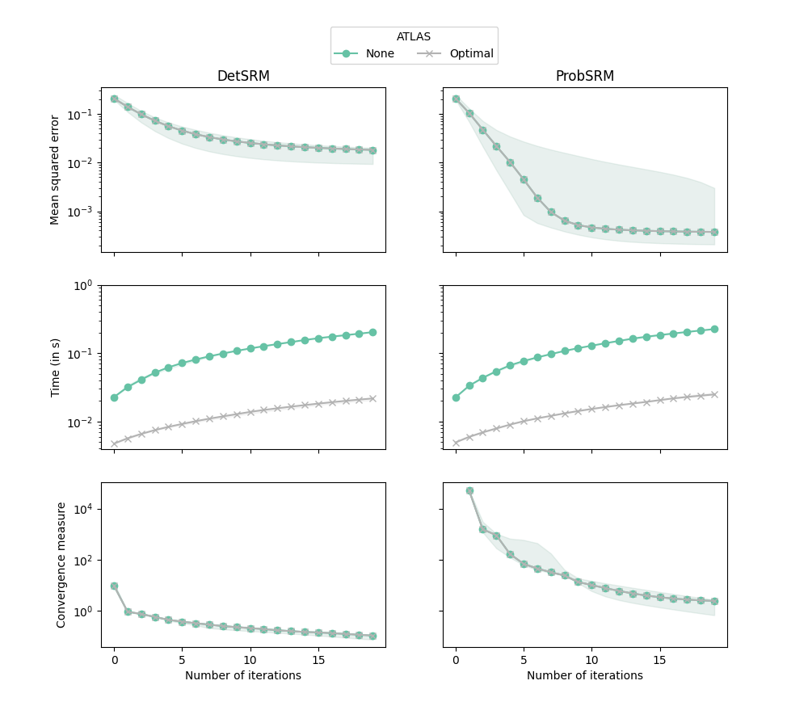

Note
Click here to download the full example code
FastSRM : running time and convergence
This example demonstrates on a very small dataset that the optimal atlas used in FastSRM speeds up the computation of shared components but without any loss of accuracy.
Starting FastSRM example
ProbSRM did not converge. Current diff is 0.000013
ProbSRM did not converge. Current diff is 0.685497
ProbSRM did not converge. Current diff is 2.767339
ProbSRM did not converge. Current diff is 129.790836
ProbSRM did not converge. Current diff is 2.456504
ProbSRM did not converge. Current diff is 0.000013
ProbSRM did not converge. Current diff is 0.685497
ProbSRM did not converge. Current diff is 2.767339
ProbSRM did not converge. Current diff is 129.790836
ProbSRM did not converge. Current diff is 2.456504
/home/circleci/miniconda3/envs/testenv/lib/python3.8/site-packages/numpy/lib/function_base.py:4527: RuntimeWarning: invalid value encountered in subtract
diff_b_a = subtract(b, a)
Done
import os
from time import time
from fastsrm.fastsrm import fastsrm
from fastsrm.srm import detsrm, probsrm, projection
from fastsrm.utils import reg_error
import numpy as np
import matplotlib.pyplot as plt
import matplotlib.ticker as plticker
from matplotlib.cm import get_cmap
from joblib import delayed, Parallel
print("Starting FastSRM example")
dim = (15, 15, 15)
m, v, k, n = 5, np.prod(dim), 20, 30
def do_expe(it, seed, algo):
rng = np.random.RandomState(seed)
Sigma = rng.dirichlet(np.ones(k), 1).flatten()
S = np.sqrt(Sigma)[:, None] * rng.randn(k, n)
W = np.array([projection(rng.randn(v, k)) for i in range(m)])
sigmas = 0.1 * rng.rand(m)
N = np.array([sigmas[i] * rng.randn(v, n) for i in range(m)])
X = np.array([W[i].dot(S) + N[i] for i in range(m)])
S_true = S
t_init = time()
def callback(source, gnorm, current_iter, current_time):
return (
float(reg_error(np.copy(S_true), np.copy(source))),
float(current_time - t_init),
current_iter,
seed,
algo,
float(gnorm),
)
if algo == "detsrm":
S = detsrm(
X, k, n_iter=it, random_state=rng, callback=callback, tol=-1,
)[-1]
if algo == "probsrm":
S = probsrm(
X, k, n_iter=it, random_state=rng, callback=callback, tol=-1,
)[-1]
if algo == "fastdet":
S = fastsrm(
[[x] for x in X],
k,
n_iter=it,
random_state=rng,
callback=callback,
tol=-1,
method="det",
)[-1]
if algo == "fastprob":
S = fastsrm(
[[x] for x in X],
k,
n_iter=it,
random_state=rng,
callback=callback,
tol=-1,
method="prob",
)[-1]
return np.array(S)
iters = 20
os.makedirs("./results", exist_ok=True)
algos_det = ["detsrm", "fastdet"]
algos_prob = ["probsrm", "fastprob"]
algos = algos_det + algos_prob
S = []
for algo in algos:
resS = np.array([do_expe(20, seed, algo) for seed in range(5)])
S.append(resS)
index = {a: k for k, a in enumerate(algos)}
loc = plticker.MultipleLocator(base=10)
NAMES = {}
NAMES["probsrm"] = "None"
NAMES["detsrm"] = "None"
NAMES["fastdet"] = "Optimal"
NAMES["fastprob"] = "Optimal"
seeds = np.arange(30)
vir = get_cmap("Set2", len(algos_det))
f, axes = plt.subplots(3, 2, sharex="col", sharey="row", figsize=(10, 9))
for j, algos_group in enumerate([algos_det, algos_prob]):
for c, algo in enumerate(algos_group):
res = S[index[algo]]
iters = np.arange(len(res[0]))
times = res[:, :, 1].astype(float)
errors = res[:, :, 0].astype(float)
gnorms = res[:, :, 5].astype(float)
linestyle = "-"
if "fast" in algo:
marker = "x"
else:
marker = "o"
axes[0, j].plot(
iters,
np.median(errors, axis=0),
marker=marker,
linestyle=linestyle,
color=vir(c),
markevery=1,
)
axes[1, j].plot(
iters,
np.median(times, axis=0),
marker=marker,
linestyle=linestyle,
color=vir(c),
label=NAMES[algo],
markevery=1,
)
axes[2, j].plot(
iters,
np.median(gnorms, axis=0),
marker=marker,
linestyle=linestyle,
color=vir(c),
label=NAMES[algo],
markevery=1,
)
axes[0, j].fill_between(
iters,
np.quantile(errors, 0.25, axis=0),
np.quantile(errors, 0.75, axis=0),
color=vir(c),
alpha=0.1,
)
axes[1, j].fill_between(
iters,
np.quantile(times, 0.25, axis=0),
np.quantile(times, 0.75, axis=0),
color=vir(c),
alpha=0.1,
)
axes[2, j].fill_between(
iters,
np.quantile(gnorms, 0.25, axis=0),
np.quantile(gnorms, 0.75, axis=0),
color=vir(c),
alpha=0.1,
)
axes[0, 0].set_yscale("log")
axes[1, 0].set_yscale("log")
axes[2, 0].set_yscale("log")
y_minor = plticker.LogLocator(
base=10.0, subs=np.arange(1.0, 10.0) * 0.1, numticks=10
)
axes[1, 0].set_yticks([1e-2, 1e-1, 1e0])
axes[0, 0].yaxis.set_minor_locator(y_minor)
axes[1, 0].yaxis.set_minor_locator(y_minor)
axes[0, 0].set_title("DetSRM")
axes[0, 1].set_title("ProbSRM")
axes[1, 0].set_ylabel("Time (in s)")
axes[2, 0].set_ylabel("Convergence measure")
axes[0, 0].set_ylabel("Mean squared error")
axes[2, 0].set_xlabel("Number of iterations")
axes[2, 1].set_xlabel("Number of iterations")
plt.tick_params(axis="y", which="minor")
plt.legend(loc="upper center", bbox_to_anchor=(-0.1, 3.8), ncol=5, title="ATLAS")
plt.show()
print("Done")
Total running time of the script: ( 0 minutes 4.068 seconds)